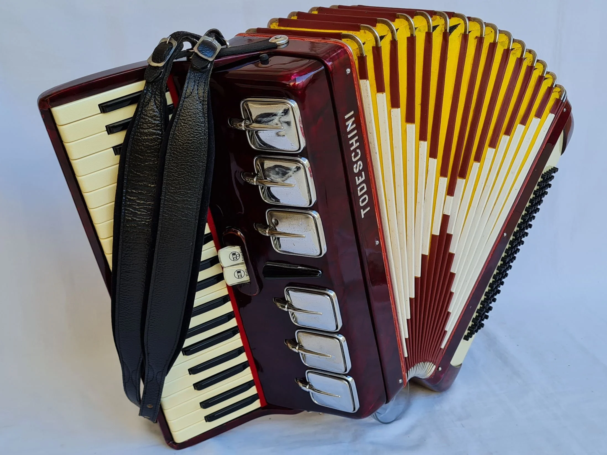
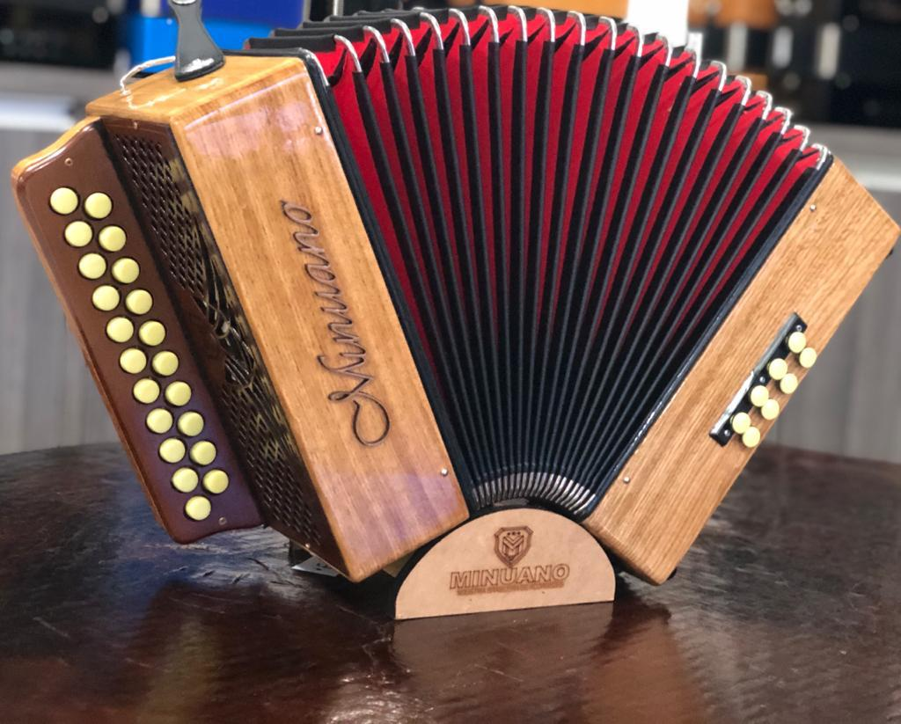

A gaita (também conhecida como sanfona ou acordeon, não a ser confundida com a gaita de boca) é, de forma geral, um instrumento de aerófono (família da qual também fazem parte a flauta, trompete etc.) caracterizado, em especial, pelo fole, que é o componente que é "fechado" ou "aberto" para forçar a passagem do ar por pequenas palhetas que vibram, e então produzem som.
No Brasil é um instrumento muito popular, muito ligado à música tradicional de praticamente todas as regiões do Brasil. Seja pelo nome de "gaita", "sanfona" ou "acordeon", ganhou muito destaque na música popular brasileira principalmente a partir da década de 1950, com destaque para o sanfoneiro Luiz Gonzaga, no nordeste, e Mary Terezinha, gaiteira muito presente na obra de Teixeirinha, famoso trovador do Rio Grande do Sul. A partir dos anos 1970 e 1980, perdeu espaço para outros instrumentos e gêneros musicais, mas ainda é muito difundido principalmente na música sertaneja, seja a "raiz" ou a "universitária", como também na música tradicional gaúcha, forró e axé, entre inúmeras outras.
| Sanfona | Gaita-Ponto | |
|---|---|---|
| Mão esquerda | Botões | Botões |
| Mão direita | Teclas | Botões |
| Movimento do fole | Mesma nota | Notas diferentes |
| Escala usada | Cromática | Diatônica |
No Brasil, há duas variações principais da gaita: A sanfona e a gaita-ponto. Conheça cada uma delas!



Fotos: Armazém do Acordeon e Guilherme Garcia